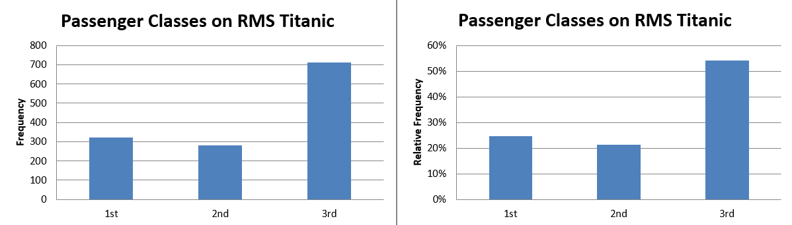
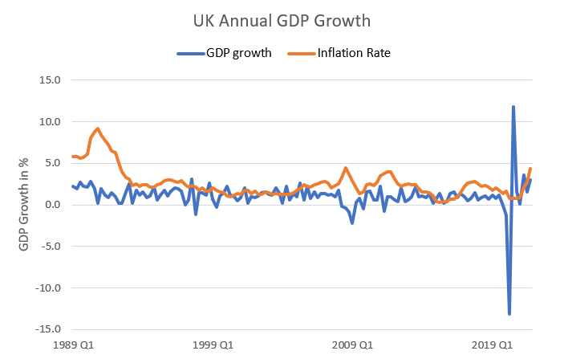
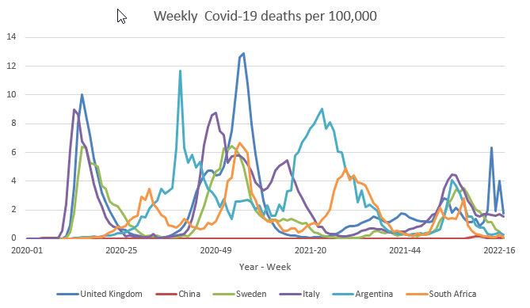

3 Graphical Descriptive Statistics
3.1 Introduction
You will often be confronted with a huge amount of data, say around 50,000 road traffic accidents in Greater Manchester in 2022. Your boss (perhaps the Major of Manchester) wants to have an overview of the most important features of these accidents. It is obvious that you cannot just give him (him, as at the time of writing the Major of Manchester is Andy Burnham) the spreadsheet of the data. You need to summarise! You need to prepare some representations of the data that give a good overview of what is going on. That is what descriptive statistics do.
3.2 Graphical Data Representations
We shall now describe some simple graphical displays, which provide visual summaries of the raw data. We consider just 4 types: those which can be used with discrete data - the relative frequency diagram, or bar chart; those for use with continuous data - the histogram; those that can be used to represent time-series data line graphs; and those which provide a summary of the possible relationship between two variables - the scatter plot. Each are introduced by means of a simple example.
Our introduction here barely scratches the surface and the field of data visualisation has recently become more prominent. If you want to explore a huge variety of data visualisations (very few of which could be created with Excel) the following are a few useful links:
- Visualisingdata,
- Visme or,
- these examples discussed on the Tableau webpage including some truly iconic visualisations.
3.3 Discrete data - Bar Charts
We will use the Titanic Data set which contains three discrete data sets, the class in which the passenger resided (1st, 2nd or 3rd), the gender and whether a passenger survived the sinking of the Titanic on 15 April 1912.
Let’s concentrate on the information of the class in which the Titanic passengers were booked into. This is a snippet of the data in the spreadsheet:
By summarising the data we find the following summary information, the number of passengers in each class and the proportion (or relative frequency).
| Passengers | Proportion | |
|---|---|---|
| 1st Class | 322 | 0.2452 = 24.52% |
| 2nd class | 280 | 0.2133 = 21.33% |
| 3rd Class | 711 | 0.5415 = 54.15% |
| Total | 1,313 | 1.0000 |
This information can then be shown in a bar chart. Below we show a bar chart each for the number of observations (frequency) and the proportion (relative frequency).

This diagram, simply places a bar of height equal to the appropriate frequency (left chart) or proportion (right chart) for the different classes. Notice that the bars are separated by spaces (i.e., they are isolated) which exemplifies the discrete nature of the data.
Both diagrams basically display the same information and in fact the only differences are the scales on the vertical axis. We see from the diagram on the left that 322 passengers traveled First Class and from the diagram on the right that the relative frequency of 1st Class Passengers is 0.25, or 25%. Similarly, 54% were 3rd Class passengers. It is a property of discrete data that we can easily add proportions of different classes to come to new meaningful categories. I.e. 75% of passengers (21% + 54%) did not enjoy First Class Luxury.
Whether you use the frequency or the proportion diagram depends on whether it is more important to see the absolute number or the proportions of passengers in the different classes.
After this example, let us look at a formal definition of relative frequency.
If a sample consists of \(n\) individuals (or items), and \(m\leq n\) of these have a particular characteristic, denoted \(\mathcal{A}\), then the relative frequency (or proportion) of characteristic \(\mathcal{A}\) in the sample is calculated as \(\frac{m}{n}\). The percentage of observations with characteristic \(\mathcal{A}\) in the sample would be \(\frac{m}{n} \times 100\). E.g. 0.65 is equivalent to 65%.
3.4 Continuous data - Histograms
Again we refer to the Titanic Data set in which we have 1313 observations, however only for (n = 756) do we have age information. Really, age is a continuous variable (just imagine age being measured in milliseconds) but it is commonly reported in years only. The distribution of the data can be summarised, graphically, using a histogram which is constructed as follows:
- Group the raw data into intervals/classes, not necessarily of the same width:
- the data are continuous, so there must (in general) be no spaces between intervals
- the number of intervals chosen is often a fine judgement: not too many, but not too few. Depending on the data 5 to 10 is often sufficient, but in the end you should choose the number of intervals to give you informative picture about the distribution of the data. Below we have chosen 8 intervals with the first being ([0,10)) where 0 is called the lower class limit and 10 is the upper class limit. The class width (of any interval) is the difference between the upper class limit and the lower class limit. For the first interval this is (10-0=10).
- record the frequency in each interval; i.e., record the number of observations which fall in each of the constructed intervals
- For each frequency, calculate the relative frequency, which is the frequency divided by total number of observations.
- For each relative frequency construct a number called the density (of the interval) which is obtained as relative frequency divided by class width.
In the case of the age for passengers on the Titanic this gives rise to the following grouped frequency table:
| waiting time | class width | mid-point | frequency | rel. freq. | density |
|---|---|---|---|---|---|
| [ a,b) | (b-a) | (a+b)/2 | |||
| [ 0,10) | 10 | 5 | 53 | 0.00701 | 0.0070 |
| [ 10,20) | 10 | 15 | 96 | 0.1270 | 0.0127 |
| [ 20,30) | 10 | 25 | 252 | 0.3333 | 0.0333 |
| [ 30,40) | 10 | 35 | 168 | 0.2222 | 0.0222 |
| [ 40,50) | 10 | 45 | 106 | 0.1402 | 0.0140 |
| [ 50,60) | 10 | 55 | 54 | 0.0714 | 0.0071 |
| [ 60,70) | 10 | 65 | 23 | 0.0304 | 0.0030 |
| [ 70,80) | 10 | 75 | 4 | 0.0053 | 0.0005 |
Notice that the entries in the relative frequency column sum to 1, as they should (why?). The density calculation corresponds to the concept of density in a continuous distribution. If you calculated the size of the coloured area underneath the density histogram you would find this to equal 1.
Now we can represent these results graphically. In fact you will sometimes see the frequencies, sometimes the relative frequencies and sometimes (although rarely) the densities represented on the vertical axis. In each case, really, the same information is conveyed and which one suits your purpose depends on what element you want to stress.

This graph looks fairly similar to a bar chart, but note that the bars must be connected - no spaces. This reflects the fact that the data are continuous. On this occasion we chose 8 bins/classes. You could have created fewer or more, depending on how much detail you want to convey. But, unless you think they are informative, avoid constructing intervals, which contain no observations.
3.5 Time-Series data - Line Graph
When we have time-series data we have observations for the same variable ordered in time and we want to display the data in a manner that illustrates this time aspect of the data. The way to do this is to create a line graph (or time-series graph) as in this example that uses growth rates for UK Gross Domestic Product Data (GDP). We often label this (\(\Delta gdp\_{t}\)).

You can clearly see from this image that at the end of the sample (during the 2020 pandemic year) the drop and subsequent recovery of the UK’s GDP was unprecedented.
Creating such line graphs with two data series can be more tricky, if the two series you want to show in one graph are on different scales. For instance the level of GDP (measured in Billions of pounds) and GDP growth (measured in percentage points). The following clip explains how to handle such a situation.
3.6 Two and more variables: Line graphs and Scatter plots
The graphical summaries, introduced above, are for summarising just one variable. An interesting question is whether two (or more) characteristics/random variables are inter-related. For example, referring to the previously used GDP growth data for which we have observations from Quarter 1 1955 to Quarter 1 2013.
3.6.1 Two variables
We can add the inflation series (\(inf_{i}\)) to the line graph of the GDP growth rate.

Such graphs can be very revealing Although in this case it is not apparent that there is an obvious correlation between GDP growth and Inflation in the UK.
A different type of graph often used to display how two variables are related to each other is a scatter plot. Below you can see two versions of a scatter plot displaying the same data shown in the above line graph.

On the left hand side you can see the plot which shows all the data from 1989 (quarter 1) to 2021 (quarter 4). Each point represents one data point. For instance look at the one data point coloured in red in the South-West corner of the left scatter plot. That one point represents the observation from 2020 (Q2) in which GDP dropped by 13.1% and annual inflation was measured to be 0.8%.
Perhaps you can see that the scale of this graph is driven by the very large GDP drop in Q2 2020 and the subsequent large reversal of 11.8% growth in Q3 of 2020. This compresses the vast majority of the data in the centre. Sometimes it may be worth to exclude some extreme observations (here the observations from the Year 2020 and 2021 representing the Covid period). The scatter plot on the right only shows the data up to 2019. You can now see that there is perhaps a slight positive correlation between these two variables.
This sort of diagram should not be viewed as way of detecting the precise nature of the relationship between the two variables and, in general, a lot of common sense is required as well. Rather, it merely illuminates the simplest, most basic, relation of whether larger \(\Delta gdp_{t}\) values appear to be associated with larger (or smaller) values of the \(inf_{t}\) variable; thereby signifying an underlying positive (respectively, inverse or negative) observed relationship between the two. This may be suggestive about the general relationship but is by no means conclusive. Nor does it inform us on general cause and effect. It is impossible to conclude whether changes in \(inf_{t}\) actually cause changes in variable \(\Delta gdp_{t}\) or vice versa. Indeed the two variables may not be related to each other at all. Therefore care must be taken in interpreting such a diagram.
For that reason scatter plots are more common for cross-sectional data which do not have a time series dimension. To illustrate this we will revert to a new example, relating to data from the Covid-19 pandemic. Let’s say we want to compare whether the case infection rates in countries at a particular point in time (say Week 10 in 2022) are in any way related to either how rich a country is (as measured by GDP per capita) or by how much a country spends on their Health System (as measured by the % pf GDP spend on Health).
Here is a snippet of the spreadsheet used for this exercise.

You can see that we have observations for different countries (in rows) which are all coming from the same time (2022-10). In columns we have different variables for each country, here the 14-day Covid-19 case rate (per 100,000), the Health expenditure (as a % of GDP), the GDP per capita and the (natural) log of GDP per capita.
We start by comparing the Covid case rate to the Health expenditure.

What you can see from such a scatter diagram is that there are only a few countries with very high case rates and there is no apparent correlation with the percentage of Health expenditure. Below we show scatter diagrams which relate the case rate to GDP per capita. In the left panel you can see GDP p.c. on the horizontal axis, and on the right panel you can see the same information, just that on the horizontal axis we now show the log of GDP p.c..

In the scatter diagram on the left hand side (x axis: GDP p.c.) you can mainly see that there are a few countries which are incredibly reach and and a whole bunch of countries which have very lo GDP p.c. (less than $2,000 per year per person). When you have a variable on one of the axis which is so skewed, it can often be difficult to see interesting patterns.
A common tool used in such circumstances is to scale the respective axis. Here we calculate the log of GDP p.c. and then use that on the horizontal axis (right panel). This has the effect of stretching out the GDP p.c. values at the lower end. Values of $500 and $2,000 are equivalent to approximately 6.2 and 7.6 on the logarithmic scale (as \(ln(500) = 6.21\) and \(ln(2000)=7.60\)). In this scatter diagram it is more apparent that there seems to be a positive correlation between income and covid case numbers.
However, we ought to be careful and should not take these case numbers at face value. It may well be that poorer countries merely detect fewer of the existing cases.
3.6.2 More than two series
We shall illustrate another potential pitfall when comparing time series with line graphs. For this we look at some Covid infection data across a number of different countries (Argentina, China, Italy, South Africa, Sweden and the UK). Let us first look at a line chart which compares the number of Covid infections across in the timespan from the beginning of 2020 to early 2022.

From this line plot you can see that during the pandemic there were significant variations in registered Covid-19 cases across countries and across time. In particular it seems as if, for instance, the UK did fairly badly and Sweden and China did particularly well in terms of keeping the number of cases low. But you would be correct in interjecting that these countries have very different population sizes and therefore it may not be correct to compare these case numbers. It is for this reason that Covid-19 infections are usually reported as a case rate (infections per 100,000).
The next line graph, therefore, compares these case rates.

What we learn from here is quite different. It is still apparent that the officially reported case load in China is remarkably low. Sweden, however, cannot claim to have managed to keep the case load significantly lower than the other countries. The UK continues to have relatively high case rates. When looking at these data one also needs to keep in mind that the officially reported case numbers are significantly influenced by the testing regime. The late drop in UK cases at the beginning of 2022, for instance, is partly the result of the significant reduction in testing activity. May this be a reason for South Africa showing fairly modest infection rates across the entire Covid period?
Let’s look at the equivalent data for Deaths related to Covid-19. While there is still significant variation across countries in terms of recording these, it is widely understood that mortality statistics are more comparable.

When comparing these to the previous graphs it is apparent that fewer people are dying from Covid in late 2021 and 2022. This is due to significant vaccination rates. We can also see that South Africa has fairly comparable death rates compared to the other countries, indicating that the earlier infection rates may well be under-reported.
To conclude this section answer the following question.
Line graphs are an excellent tool to (multiple correct answers are possible)
If you use too many units in a line plot it can quickly become impossible to read. In fact the six countries we used above are almost too many. Rarely is it useful to include more than 6 series in a time series plot. And you can actually use a line plot to make graphical comparisons which are not appropriate. We did so above when we looked at the absolute value of covid cases without adjusting for population size.
3.7 Additional Resource
To make this skill a skill that will help you when you come to apply for jobs you should practice creating such graphs yourself. All the graphs shown here can easily be created in Excel. How to create various plots in Excel: Economics Study Skills Page.